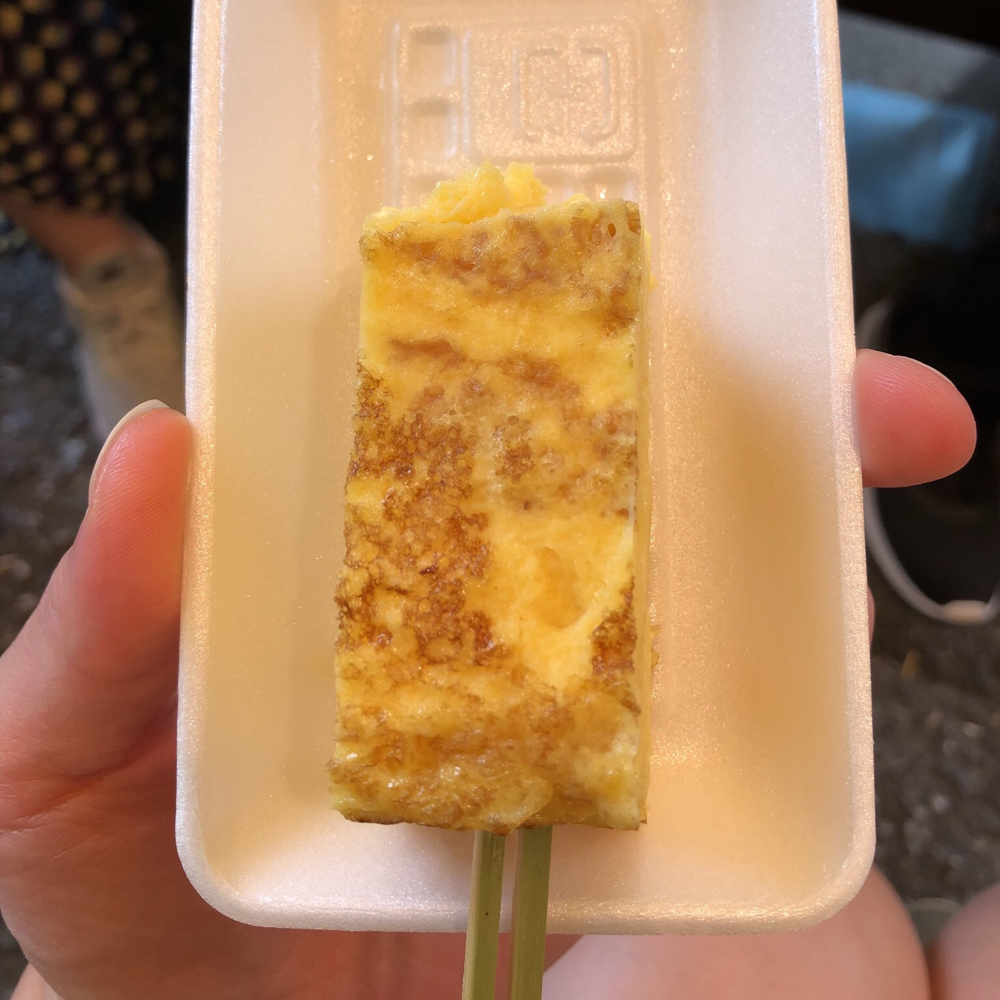
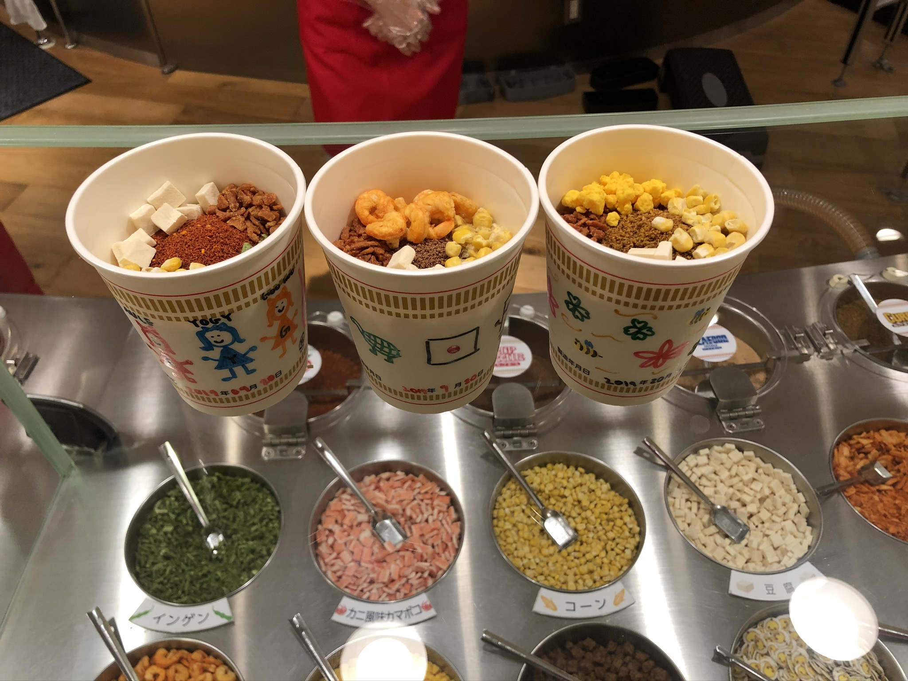

Tokyo
Summer 2019
Shibuya
Ichiran Ramen 一蘭
09.21.19
Tonkotsu Ramen
Harajuku
GOMAYA KUKI
09.21.19
9000 Black Sesame Seeds Ice Cream
Sesame Cheesecake
Tsukiji Fish Market
09.20.19
Otoro Don
Maguroya Kurogin
Grilled Scallops
Harumi Dori
Uniman Kiwami
Hamada Shoten
Muscat Grape
Tsukiji Outer Market
Salmon Inarizushi
Tsukiben

Tamagoyaki
Marutake

Yokohama
Cup Noodles Museum
09.19.19
Customized Cup Noodles
Kyoto
Nara
Osaka
WELCOME!